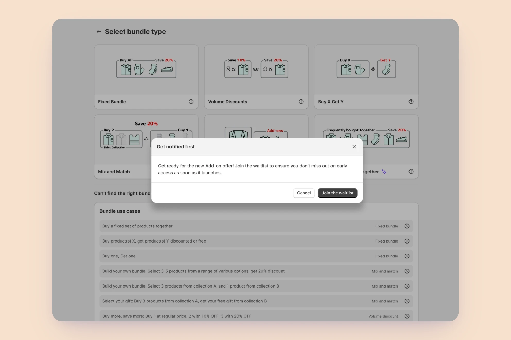
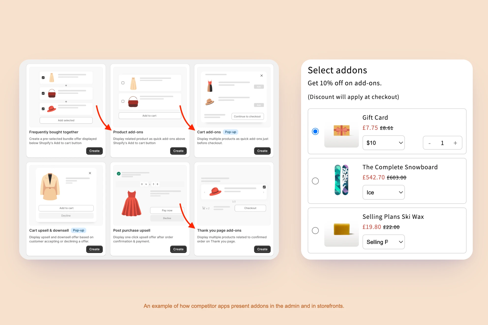

A New Feature, an Old Assumption
A support pattern led me to build a new add-on feature, validated through a waitlist and tested with real merchants before it shipped. It became one of the app's top three most-used offer types within months. Building it also handed me a framework I used again later: while investigating a separate rise in trial cancellations, I traced the problem to an older, heavily used feature built around the wrong assumption. Rebuilding it on the same model cut cancellations 17% for the A/B test's active group versus the inactive control, and nearly in half for the merchants hit hardest.

Two offers, one shared through-line
A Shopify app helps merchants build discount and bundle offers without sacrificing how their storefront looks. Two of its most-used offer types are the product add-on and Buy X Get Y. I designed both, and looking back, the second project only made sense because of what I learned building the first.
Finding the add-on in the noise
Support requests are usually scattered and easy to dismiss individually. Toward the end of Q2 2024, they stopped being easy to dismiss. In a single week I counted more than five separate requests for the same thing: a way to attach a small extra item to a product without folding it into a full discount bundle. One merchant described it plainly, an expensive product paired with a cheap add-on, no discount needed, just the ability to offer them together.
Rather than commit engineering time on the strength of a few tickets, we ran a cheap test first. On June 23 I added a card for "product add-on" to the bundle-type selection screen. Clicking it didn't build anything. It just joined the merchant to a waitlist. By the end of July, over 400 people had signed up. That number, combined with competitors starting to experiment with similar features, was enough to move this from "interesting" to "next."

TODO — how I approached it
TODO draft What was your scope on this project — research, design, or both? Who else was on the team (PM, engineers), and was this your project alone or a shared effort? Follow with a short bullet list of process steps, same pattern as the other case study's Process intro.
1. Researching what merchants actually needed
I spent the following weeks on research from three directions. I read through support threads to find the earliest, clearest statements of what merchants actually wanted, which surfaced a consistent pattern: most people already used the word "add-on," expected it to appear once a specific product was in the cart, and disagreed mainly on whether the customer or the merchant should choose the item. Everyone agreed it belonged on the main product's page.
I also audited the leading Shopify apps offering something similar, to see how they structured the setup flow and the storefront experience, and read outside the Shopify ecosystem entirely, into how add-ons function as an upsell tactic in retail generally. A few ideas kept surfacing there. An add-on works because it completes a decision the customer has already made, not because it's a hard sell. Too many options at once cause hesitation. And timing matters: an add-on shown too early competes with the main purchase decision instead of following it.

2. TODO — designing the add-on feature
TODO draft What were the design options considered, and why did the shipped version win?
3. TODO — the unexpected channel
TODO draft The brief mentions an existing feature was found being used through "a new channel" after shipping — what channel, and how was it discovered?
TODO — the calls that mattered
TODO draft TODO — describe the challenge behind the key decision.
TODO — the synthesis statement that captures the core decision, same role as the pull-quote in the other case study's Key decisions section.
TODO draft TODO — describe the decision itself and why it was chosen.
TODO — what I built
TODO draft What did the shipped design/feature actually look like or work like? Add screenshots here.
A discovery that reshaped the roadmap
TODO draft TODO — the brief says "these changes affect the product metric a lot." Which metric, and by how much? (Homepage currently claims an 18% feature adoption lift.)
TODO — reflection & next steps
TODO draft What's the lesson from this project you'd want a hiring manager to take away? What would you do differently or explore next?